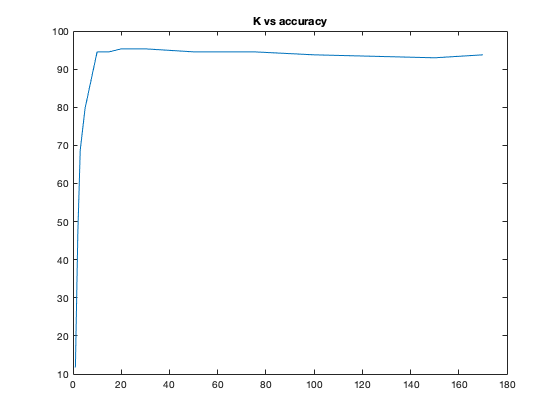

Contents
Training
clear; clc;
im_r=112;
im_c=92;
im_n=im_r*im_c;
num_person=32;
train_per_person=6;
N=num_person*train_per_person;
train_X=zeros(im_n,N);
for i = 1:num_person
for j = 1:train_per_person
path="../data/ORL/s"+i+"/"+j+".pgm";
img=imread(path);
train_X(:,6*(i-1)+j)=img(:);
end
end
train_mean_X=mean(train_X,2);
train_bar_X=train_X-train_mean_X;
L=train_bar_X'*train_bar_X;
[L_vec, L_val]=eig(L);
[~,L_ind] = sort(diag(L_val),'descend');
L_vec = L_vec(:,L_ind);
V=train_bar_X*L_vec;
V=normalize(V,'norm');
Testing
test_N=num_person*(10-train_per_person);
test_X=zeros(im_n,test_N);
for i = 1:num_person
for j = 1:10-train_per_person
path="../data/ORL/s"+i+"/"+(j+6)+".pgm";
img=imread(path);
test_X(:,4*(i-1)+j)=img(:);
end
end
test_per_person=4;
test_bar_X=test_X-train_mean_X;
y=[];
x=0;
Ks = [1, 2, 3, 5, 10, 15, 20, 30, 50, 75, 100, 150, 170];
for k = Ks
Uk=V(:,1:k);
train_E=Uk'*train_bar_X;
test_E=Uk'*test_bar_X;
correct=0;
s0=0;
x=x+1;
for i = 1:num_person
for j = 1:test_per_person
arr=sqrt(sum((train_E-test_E(:,test_per_person*(i-1)+j)).^2,1));
[~,idx]=min(arr);
s0=s0+1;
if (1+floor((idx-1)/6))==i
correct=correct+1;
end
end
end
y(x)=(100*correct)/s0;
end
Testing results
figure;
plot(Ks,y);
title('K vs accuracy');
